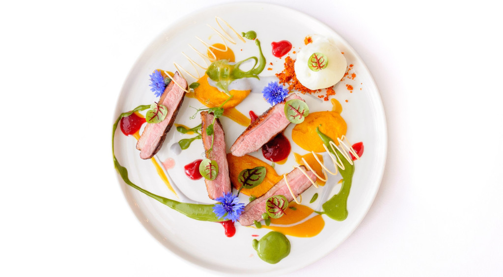
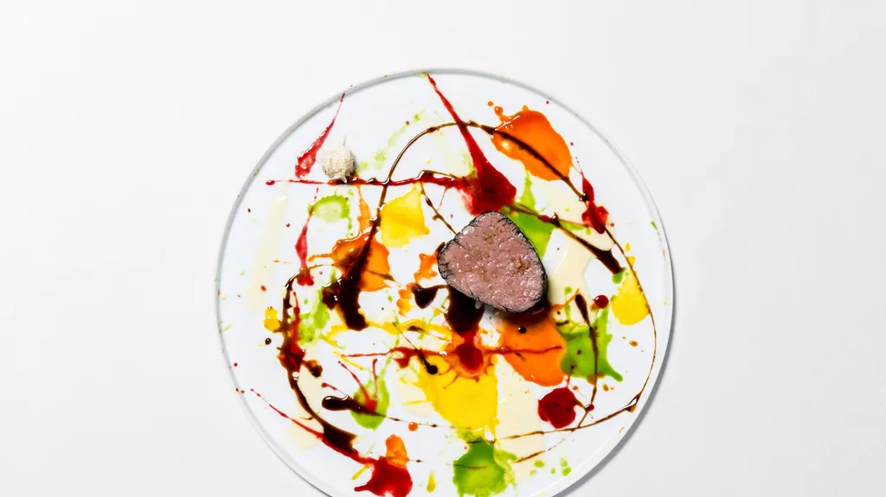
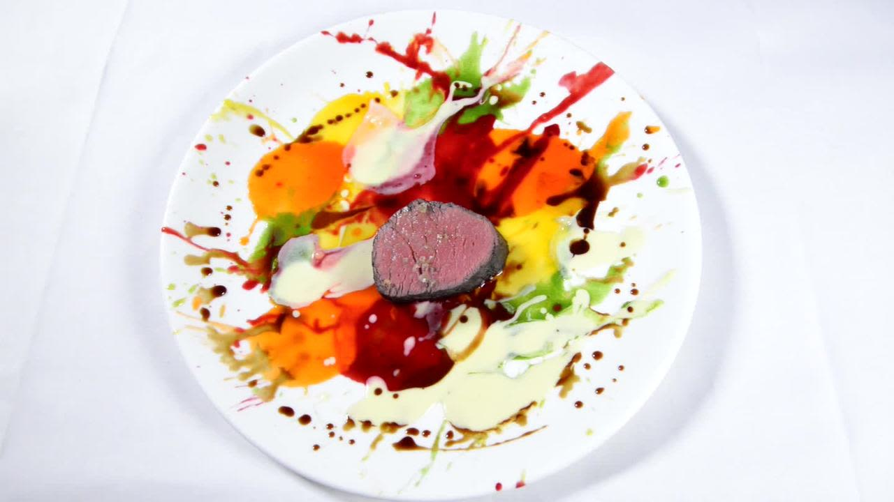

Presentation idea 1
Visually artistic chef transforming dishes into edible masterpieces.

Presentation idea 2
Master of plate design, elevating food into a work of art.

Presentation idea 3
Culinary artist crafting innovative presentations that tantalize taste buds and eyes.